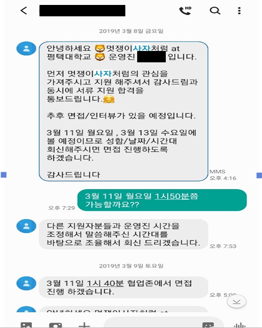
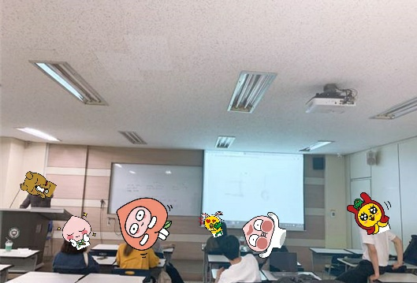
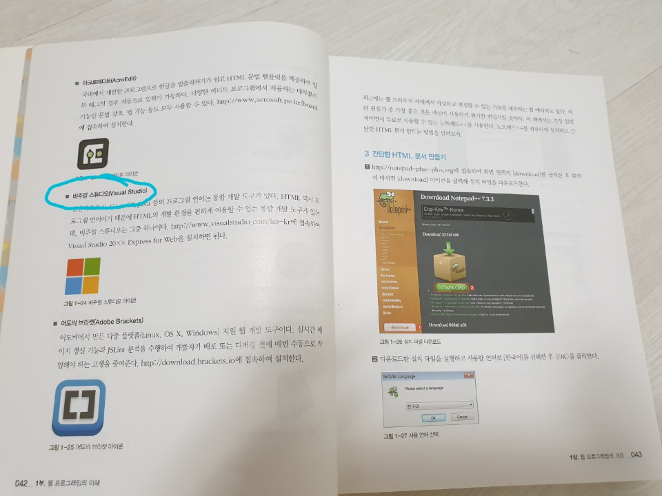
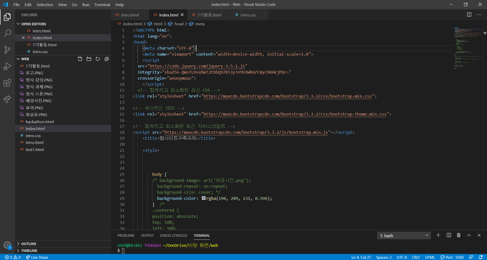
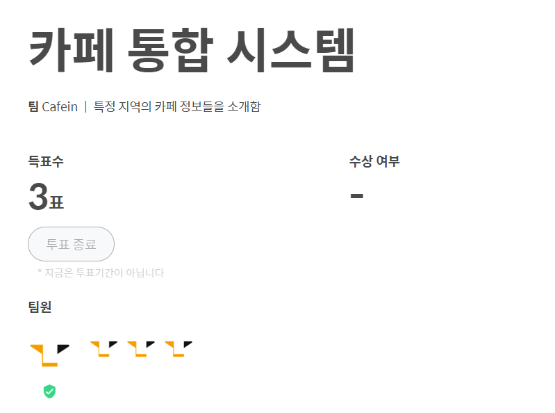
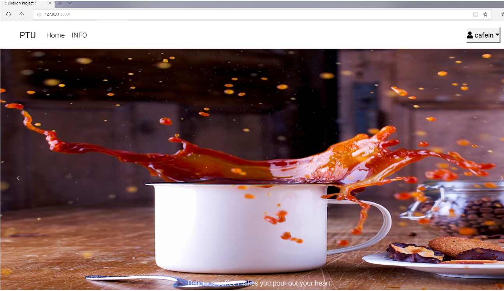
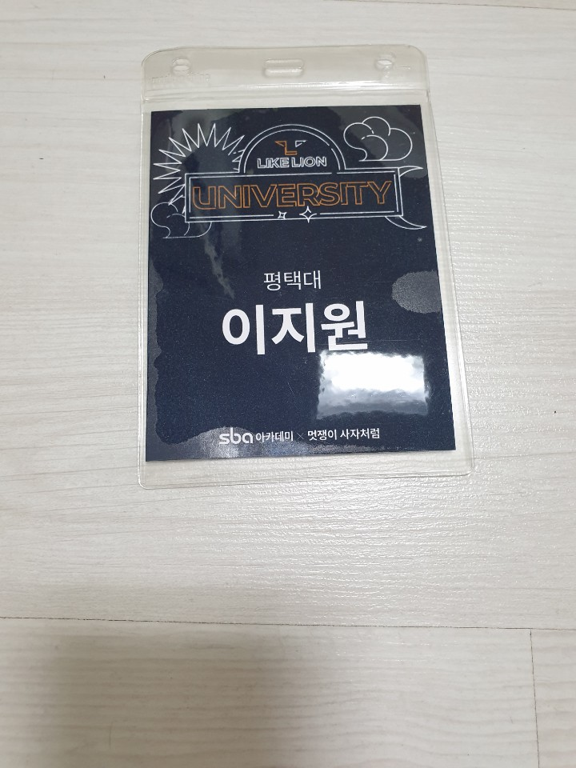
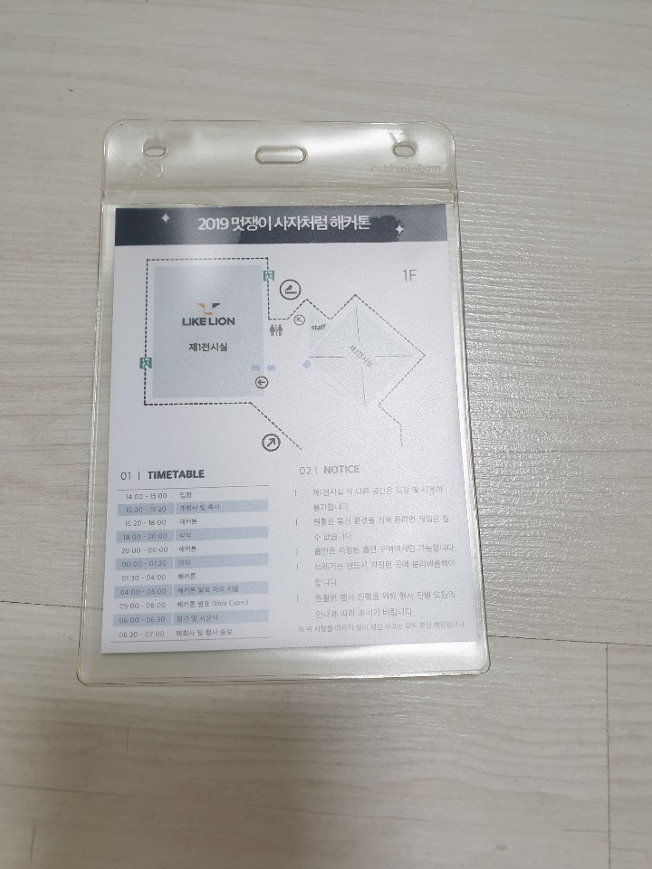
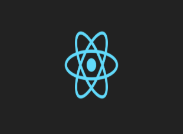

제가 활동했던 시기는 2019년 멋쟁이 사자처럼 7기 였습니다.
지난 해 학교 셔틀버스 정류장,몇몇 건물에서 이 홍보 포스터를 보신분들도 계실것이고,
못보신분들도 계실겁니다.
저는 19년도 개강하기전에 페이스북에서 홍보글을 보고 지원을 하게 되었습니다.

지원을 할때 1차는 서류지원으로 신청을 한 뒤에 2차로는 면접을 보는 절차였습니다.
1차 서류면접 질문사항에는 각 학교마다 질문사항이 달랐습니다.
질문사항이 모두 기억나지는 않지만, 생각나는 것들 위주로 적어보자면,
지원동기,협업을 하는 도중 동료들과 갈등에 부딪힌다면 어떻게 행동할 것 인지,
자신이 만들고 싶은 IT서비스는? ..등등의 질문들이 있었습니다.

2차 면접도 합격한후에 저는 멋쟁이 사자처럼 7기 일원이 되었습니다.
멋쟁이사자처럼 에서는 CLASS LION 이라는 온라인 강의 자체플랫폼으로 공부를 했습니다.
7기 에서는 django라는 웹 프레임워크를 메인강의로 배웠습니다.
강의를 보고 실습을 통해 직접 코딩을 해봤어야했고 그 결과물을 과제로 제출했어야했습니다.
과제를 기한내에 제출하지 못하면 멋쟁이 사자처럼 중앙관리에서 각 학교측에 과제 미제출 대상자는 짜르게 되었습니다.
(..실제로 저희학교 멋쟁이 사자처럼7기에서 제출을 하지못해 짤린 분들이 계셧다는..크흠)
그리고 일주일에 한 번씩 부원들 공강시간을 맞춰서 모여서 강의 내용 수업을 했고,
쪽지시험, 강의를 보면서 모르는내용 질문,등등의 시간을 가졌습니다.


실습을 하면서 HTML 편집기는 저희 수업 교재에도 나와있는 Visual Studio Code를 사용했습니다.
두 번째 사진은 Visual Studio Code를 실행한 사진이고,현재 이 웹사이트를 꾸미는 도중에 촬영한 사진입니다.




해커톤 장소와 일정
멋쟁이 사자처럼에 가장 큰 행사인 해커톤은 자신이 기획한 웹 서비스를 만드는 프로젝트로서,
무박2일의 코딩 일정을 가지는 행사입니다.
저와 저희팀은 강남역 주변의 카페들을 대상으로 그 카페들에 대한 정보들을 통합하여 제공하는 서비스를 만들고자 했습니다.
(프로젝트 사진과 그때의 파일들은 다 사라져서 사진으로대체했습니다.ㅠㅠ)
위 프로젝트 에서 제가 맡은 역할은 데이터 수집이였습니다.
저는 수동으로 각 카페의 특징을 조사하고 있던 과정도중에,동아리 선배의 도움으로
자동으로 정보를 찾아 특정 데이터베이스로 수집해 오는 작업인 웹 크롤링 에 대해서 처음 접하게 되었습니다.
(사실 지금 바로 웹 크롤링을 해봐라하면은 다시 공부를해야합니다.. 방법을 까먹었어요..)
아무튼 카페 데이터를 수집하는 시간이 길어져서 위기가 있었지만 웹 크롤링 이라는것도 알게되었고
프로젝트는 잘 마무리 했습니다 좋은경험이였다고 생각합니다.

마지막으로 react 프론트엔드, dajngo백엔드, django API 등등.. 배우게 되었고,
지금도 많이 부족한 실력이라 다시 공부를 해야하지만 1년동안 많은것을 배울수 있었고
많은 경험을 할 수 있는 시간이였다고 생각합니다.